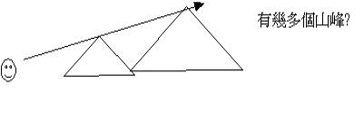

一.作者
「大利烏王第二年八月，耶和華的話臨到易多的孫子、比利家的兒子先知撒迦利亞，說：」亞1:1
「那時，先知哈該和易多的孫子撒迦利亞奉以色列神的名向猶大和耶路撒冷的猶大人說勸勉的話。」拉5:1
〜撒迦利亞與哈該是同時在耶路撒冷事奉的先知，他是易多的孫子
〜撒迦利亞的意思是耶和華必記念
二.時間
〜以色列已亡國，由瑪代波斯統治
〜若按日期可將此書分為四段
1.大利烏王第二年8月
(主前520年 8月)
----1:1-16
2.大利烏王第二年11月(主前520年11月)
----1:17-6:15
3.大利烏王第四年
9月 (主前518年
9月) ----7-8
4.似乎聖殿已建成(因沒有再題建殿)(約是主前480年後)----9-14
三.背景
1.聖殿可重建
「波斯王古列元年，耶和華為要應驗藉耶利米口所說的話，就激動波斯王古列的心，使他下詔通告全國說：「波斯王古列如此說：『耶和華天上的神已將天下萬國賜給我，又囑咐我在猶大的耶路撒冷為他建造殿宇。」拉1:1-2
「百姓到了耶路撒冷神殿的地方。第二年二月，撒拉鐵的兒子所羅巴伯，約薩達的兒子耶書亞和其餘的弟兄，就是祭司、利未人，並一切被擄歸回耶路撒冷的人，都興工建造；又派利未人，從二十歲以外的，督理建造耶和華殿的工作。」拉3:8
2.仇敵卻阻止
「猶大和便雅憫的敵人聽說被擄歸回的人為耶和華以色列的神建造殿宇，」拉4:1
「那地的民，就在猶大人建造的時候，使他們的手發軟，擾亂他們；從波斯王古列年間，直到波斯王大利烏登基的時候，賄買謀士，要敗壞他們的謀算。在亞哈隨魯才登基的時候，上本控告猶大和耶路撒冷的居民。」拉4:4-6
3.工程終停工
「那時王諭覆省長利宏、書記伸帥，和他們的同黨，就是住撒瑪利亞並河西一帶地方的人，說：「願你們平安云云。」拉4:17
「現在你們要出告示命這些人停工，使這城不得建造，等我降旨。」拉4:21
「亞達薛西王的上諭讀在利宏和書記伸帥，並他們的同黨面前，他們就急忙往耶路撒冷去見猶大人，用勢力強迫他們停工。於是，在耶路撒冷神殿的工程就停止了，直停到波斯王大利烏第二年。」拉4:23-24
四.啟發問題
〜選民會否長此下去停止建造神的殿？
〜領袖或百姓會否因此而感到懼怕，為神的熱心也冷淡起來？
〜即或建成了殿，但以色列的前景又如何？仍是沒有自己的國家，仍是有仇敵擾亂。
五.本書目的
「那時，先知哈該和易多的孫子撒迦利亞奉以色列神的名向猶大和耶路撒冷的猶大人說勸勉的話。於是撒拉鐵的兒子所羅巴伯和約薩達的兒子耶書亞都起來動手建造耶路撒冷神的殿，有神的先知在那裡幫助他們。」拉5:1-2
「萬軍之耶和華如此說：我為錫安心裡極其火熱，我為他火熱，向他的仇敵發烈怒。」亞8:2
〜神要透過撒迦利亞，激發及鼓勵百姓當剛強壯膽，不要灰心，要起來熱心建殿
〜所以本書多題及「聖殿」「祭司」「祭壇」等與聖殿有關的人物與物品
六.本書主題
「與我說話的天使對我說：「你要宣告說，萬軍之耶和華如此說：我為耶路撒冷為錫安，心裡極其火熱。」亞1:14
「萬軍之耶和華如此說：我為錫安心裡極其火熱，我為他火熱，向他的仇敵發烈怒。」亞8:2
〜但作者究竟如何喚醒以色列民熱心重建聖殿呢？從整本書的內容來看，我們會發現作者以「耶和華心裏極其火熱」為主題來喚起聖民對重建的熱心。
〜亞1:14 KJV"“I
am jealous for jerusalem and for zion with a great jealousy”
〜神對耶路撒冷對聖殿的心如同深愛一個人為她有妒火，有不難放下的情緒，祂對耶路撒冷也有積極、火熱、發怒的心情，不能忍受，不能放下的感覺(“jealous”有妒忌及積極熱心的意思)
～當我們仔細留意撒迦利亞書時，我們會看到書裏充滿了滿了耶和華對聖殿，對聖城的熱心心情與行動。
～亞1:8；8:2，透露了耶和華對錫安，對重建殿是心裏極其火熱，不是平常的火熱，而是極其火熱的，
～如何顯示神真是為錫安火熱呢？從神的親自行動顯示出來。一個人對某事火熱時，他必有相應的行動顯示他火熱，當他越火熱時，行動的投入性，及逼切性也相對提高，神亦一樣，衪不是單口講說火熱，而是親自有行動的，倒如衪說：「我必再安慰錫安，揀選耶路撒冷」（1:17）「我要作耶路撒冷四圍的火城」（2:5），「我現在回到錫安﹒﹒﹒」（8:3），「我必看顧猶大家﹒﹒﹒」（12:4），從以上經文，看到神為錫安親自的作為，有行動的作為，而且從語氣上看到神對錫安的關切及逼切性，例如「必」、「現在」﹒﹒﹒等。
～我們不禁問，神為何對錫安如此熱心呢？當從整卷書內神對以色列民或耶路撒冷殿的稱呼看到原因，神對他們有以下稱呼：「我的殿」（1:16）「我的城邑」（1:17）；「眼中的瞳人」（2:8），「我的家」（3:7）「耶和華的殿」（6:15）；「我的民」（7:7）；「自己的羊」（10:3）等等，原來今日神對錫安及以色列如此熱心，因為他們是屬衪的，是神的，神擁有的，神自己的，因此神看自己的家，自己的民，自己的城當然熱心了！
～所以從對以色列民及聖城的稱呼，神的心情及主動作為看到全篇文章所表達的是「耶和華心裏極其火熱」，為錫安火熱，為重建聖殿火熱。當以色列民看到神對重建聖殿的關切及熱心時，也令他們不能不得為神所熱心之事而熱心，也令他們不再懼怕起來，因為神的熱心必成就建殿的事，任何攔阻也不會停止神熱心的工作，所以只管剛強作工。也吹逼聖民趕快作工，因為彌賽亞重臨聖殿的日子快到，神必熱心成就這事，聖民當趕快預備迎見主！
七.內容與大網
主題----耶和華心裏極其火熱
1.為選民犯罪而大發烈怒(1:1-6)
一開始，先知聽到神望選民回轉的說話；神先向他表達衪的心情－－－－ 衪是為過去列祖犯罪而忿怒，而大大發怒（ｖ.2），一個人，如果對另一人莫不關心，即使此人犯罪，他也不會有太大反應；但神卻對選民是關切，所以過去選民犯罪，衪不是無動於衷，衪是會大大發怒，感謝神，神的火熱情懷不是長久停留在怒氣中，衪更十分心急地渴望現在以色列民不要效法列祖，要他們轉向衪，因衪極渴望再轉向選民（ｖ.3），也引列祖過去叛逆之鑑戒（ｖ.4-6），來勸導他們別效法列祖，歸向渴望他們回轉的神；所以從一開始的ｖ1-6節中，看到神為選民回轉而火熱。
2.為重建錫安而極其火熱(1:7-6:15)
耶和華不單為選民回轉而熱心，更為錫安之重建火熱起來，從以下八個異象中，可以看到神不是不關心聖殿，而是主動親自為錫安重建而計劃及工作。
在一人騎紅馬異象中（1:7-17），天使（耶和華的使者）問神不施憐憫與猶大城到幾時呢？因為此地已有七十年荒廢，但神卻對使者說，衪是為錫安心裏極其火熱的（ｖ.13，14）；何以見得神真是為錫安火熱？因神不單透露衪對錫安之情，更表示衪甚惱怒一些加害錫安的列國，這也顯示衪愛錫安之情何其深，不容許，甚至惱怒一些列國過分加害衪所愛之城；另外神亦有熱心的行動，衪應許聖殿必重建，城必再豐盛，神必再安慰耶路撒冷（ｖ.13-17）
在第二異象－－－－
四角與四匠；神開始透露衪熱心的行動與計劃來，衪先容許列國管教以色列（ｖ.18-19），但衪必藉其他國，打掉過分加害選民的國（ｖ.20-21）
在準繩與量度異象裏（2:1-13），神更加讓人看見聖城的準繩已開始量度，聖城必重建來，而且神更熱心地作聖城的火城（ｖ35），作其中的榮耀（ｖ5），衪亦透露衪看錫安民如衪眼中的瞳人寶貴，所以神必看重錫安，使他們逃脫災害（ｖ6-9），神更會來往他們中間，必再揀選耶路撒冷，所以選民應當歡樂歌唱（ｖ10-13）
要成就重建聖殿工作，必須有強而剛強的領袖，引導百姓作工，所以在第四與第五的異象（撒但敵約書亞與金燈臺，橄欖樹的異象）（3-4），神給先知看到衪為兩位領袖－－－大祭司約書亞與所羅巴伯極其熱心，神先興起約書亞，為其穿衣，囑咐衪管理神的家，帶領選民作神的工程；神也給先知看見神會成就所羅巴伯的聖殿之工作，只要靠神靈，什麼看為不能完成之工作，也能完成（4），而主更會站在兩個受膏者（約書亞、所羅巴伯旁邊），協助他們完成重建之工作，也藉此鼓勵選民不要灰心，因神已興起領袖，與他們工作了！
但神也要重提選民，神雖愛他們，為其殿熱心，但衪不是不知道他們犯罪，所以在第六異象－－－－
飛行書卷中，神必會審判偷竊妄誓者之家；但在第七異象中，神仍是愛錫安之選民（量器異象），神有一日為他們罪得清而熱心，必將他們的罪帶離（5），而且神在第八異象一四輛車與四馬，會審判列國，特別是北方之國（6:1-8）衪必為衪公義而熱心。
但最後，神更將約書亞加冠的預表啟示給先知，說明將來大衛的苗裔（6:12）－－－耶穌基督，會長起來，並要建造神的殿，而且更表明神的話是必成就的（6:15）
從以上內容，我們看到神對錫安的火熱心情，衪為重建錫安的計劃，舖排及親自的行動，所以既然神也如此熱心了，選民又如何呢？不是更應火熱為神工程努力嗎？
3.為復興錫安而極其火熱(7-8)
重建聖殿是神已計劃之事，復興錫安更是神必然成就之工；在此2章中，神向先知說出四信息，在前二信息裏，神雖然斥責以色列人禁食非為主（7:1-7）及怒憤他們行惡且硬心（7:8-14），但神仍是對復興錫安極其火熱的（8;1-2），在後二信息中，神不單重提衪的火熱之心（ｖ2），更表示衪現在要回錫安，拯救選民（ｖ3-8），更要復興錫安，使一切哀傷的日子變為歡樂（ｖ18-19）；而以此鼓勵他們剛強建殿（ｖ9-13），更安慰他們，要有喜樂的心等候那日（ｖ19），並且要在那日中行誠實與和平（ｖ14-17，ｖ19）
4.為彌賽亞國而親自成就(9-14)
神的熱心到此仍未減退，由選民的犯罪，聖殿的重建，聖城的復興，已顯示了神之熱心，而在本書結尾中，神的熱心更到達一個高峰的領域，為了彌賽亞的國度？日子而熱心起來；在9-14章裏的二默示中，神預言彌賽亞的來臨，及彌賽亞作王的日子，從這二默示中，看到神的絕對，逼切，熱心成就此事的來臨，更激勵選民當預備聖殿，迎見彌賽亞的來臨。
在第一默示中（9-11）我們可以看到神為彌賽亞來臨拯救群羊而熱心；在十一章中，雖見到此位彌賽亞來臨時，是被牧人所棄，更預言衪會被三十塊銀子所賣（ｖ4-14），但彌賽亞仍是會來（9-10），衪必來拯救，堅固，保護自己的羊，縱然自己的羊會棄絕衪。
牧人雖被棄絕，但在第二默示中，神仍會熱心成就彌賽亞作主，萬民要歸向神的日子（12-14），在此三章中，很多「那日」的字眼（12:3；13:1；14:4,9,13﹒﹒﹒），而且更有很多「必」（12:4,6,10；13:1；14:4,9,13﹒﹒﹒），及「耶和華必」或「我必」（12:3,4,6,10；14:4,9,13﹒﹒﹒）等字眼，證明神必成就那日的日子，必熱心親自完成這屬於衪的日子。
「那日」，是什麼日子，是以色列家必得救的日子（12-13）神必使耶路撒冷再蒙眷護（12:1-9），大衛之家必得復興（12:10-14），猶大居民必蒙潔淨（13;1-6），餘民必得拯救（13:7-9）；「那日」，更是彌賽亞來臨的日子（14），耶和華也必使耶路撒冷被困（14:1-3），但救主必降臨（ｖ4-8），必作王（ｖ9-11），並審判列國（ｖ12-15），最多萬民必歸耶和華，耶和華的殿必再成聖，沒有迦南人，所有來臨者也歸神為聖（ｖ16-21），這時聖殿必來到一個最至聖，至榮的光景！
總結：
因此，我們從撒迦利亞書看到一個重要主題－－－－
耶和華心裏極其火熱，為選民，為聖殿，為那日熱心，所以當選民看到神的心情，衪的工作，衪的再來，必得著鼓勵與安慰了；同樣，今日教會，聖徒，是神所建造的靈宮，我們也要為神的教會熱心，也要努力作工，預備迎見主來！
八.預言
1.解釋預言的原則
「「我夜間觀看，見一人騎著紅馬，站在窪地番石榴樹中間。在他身後又有紅馬、黃馬，和白馬。」我對與我說話的天使說：「主啊，這是什麼意思？」他說：「我要指示你這是什麼意思。」那站在番石榴樹中間的人說：「這是奉耶和華差遣在遍地走來走去的。」那些騎馬的對站在番石榴樹中間耶和華的使者說：「我們已在遍地走來走去，見全地都安息平靜。」」亞1:8-11
「我舉目觀看，見有四角。我就問與我說話的天使說：「這是什麼意思？」他回答說：「這是打散猶大、以色列，和耶路撒冷的角。」」亞1:18-19
〜避免太靈意解釋，如經文本身已說明，就用此解釋。
B.留意新約經文的解釋
「我對他們說：「你們若以為美，就給我工價。不然，就罷了！」於是他們給了三十塊錢作為我的工價。耶和華吩咐我說：「要把眾人所估定美好的價值丟給窯戶。」我便將這三十塊錢，在耶和華的殿中丟給窯戶了。」亞11:12-13
「當下，十二門徒裡有一個稱為加略人猶大的，去見祭司長，說：「我把他交給你們，你們願意給我多少錢？」他們就給了他三十塊錢。從那時候，他就找機會要把耶穌交給他們。」太26:14-16
「萬軍之耶和華說：刀劍哪，應當興起，攻擊我的牧人和我的同伴。擊打牧人，羊就分散；我必反手加在微小者的身上。」亞13:7
「那時，耶穌對他們說：「今夜，你們為我的緣故都要跌倒。因為經上記著說：我要擊打牧人，羊就分散了。」太26:31
「到那日，我必建立大衛倒塌的帳幕，堵住其中的破口，把那破壞的建立起來，重新修造，像古時一樣，使以色列人得以東所餘剩的和所有稱為我名下的國。此乃行這事的耶和華說的。耶和華說：日子將到，耕種的必接續收割的；踹葡萄的必接續撒種的；大山要滴下甜酒；小山都必流奶（原文作消化，見約珥三章十八節）。我必使我民以色列被擄的歸回；他們必重修荒廢的城邑居住，栽種葡萄園，喝其中所出的酒，修造果木園，吃其中的果子。」摩9:11-14
「末後的日子，耶和華殿的山必堅立，超乎諸山，高舉過於萬嶺；萬民都要流歸這山。必有許多國的民前往，說：來吧，我們登耶和華的山，奔雅各神的殿。主必將他的道教訓我們；我們也要行他的路。因為訓誨必出於錫安；耶和華的言語必出於耶路撒冷。」彌4:1-2

〜有時預言的經文是指向以色列人被擄歸回，但這只局部應驗，將來(未發生)更會成為萬國前來朝見神之地。
〜另外，有時先知書題到「耶和華的日子」是指向神使北國滅亡的日子，但有時候預言是有重疊性，更指向將來啟示錄主再來，審判臨到列邦的日子。
2.書中基督的預言
A.神的使者 一10(來三1)
B.神的準繩，以基督爲標準 一16(林後一20)
C.大祭司，爲全人類釘十字架 三章
D.神的受膏者，點燈的金子油 四章
E.騎驢進城 九9(太廿一1~10)
F.主的三十元賣價
十一12~13(太廿六14~16；廿七3~10)
G.肋被扎流出血與水，衆人仰望所扎的人
十二10(約十九34；啓一7)
H.血的泉源，活水的泉源 十三1(約四14；太廿六28)
I.本家受傷，猶太人釘主十字架 十三6(約十九18)
J.擊打牧人，羊分散，孤單的路 十三7(太廿六31)
K.主再來哈米吉多頓，脚踏橄欖山與聖徒同來 十四1~8
L.以色列全家得救
十二10(羅十一2)
M.作全地的王，奪回撒但掠地
九10，十四16~21；啓十九16
-----張向晨《聖經六十六卷》